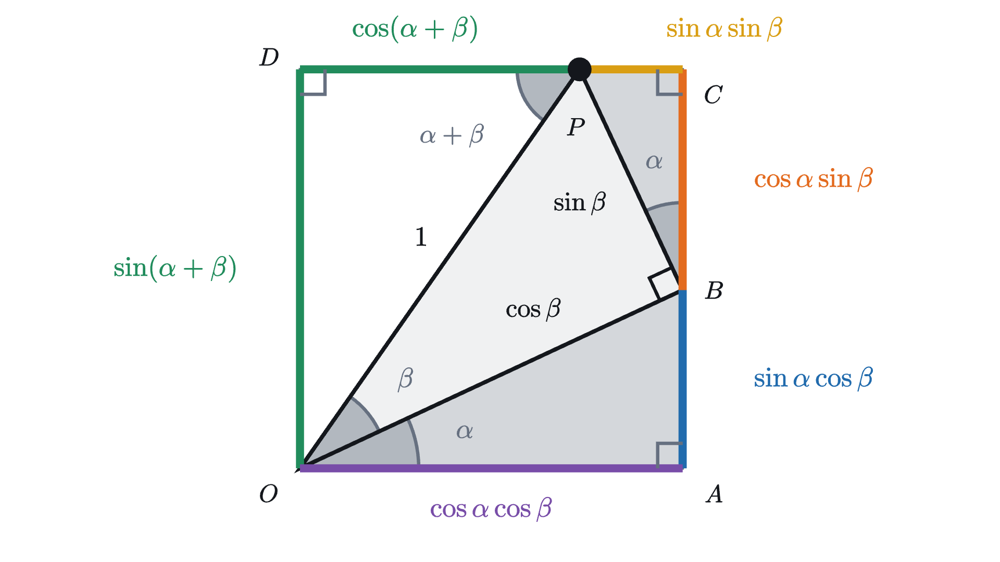
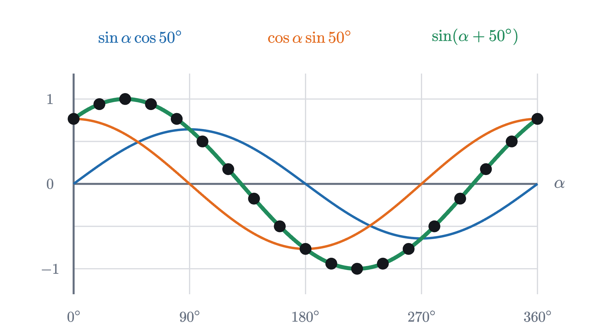
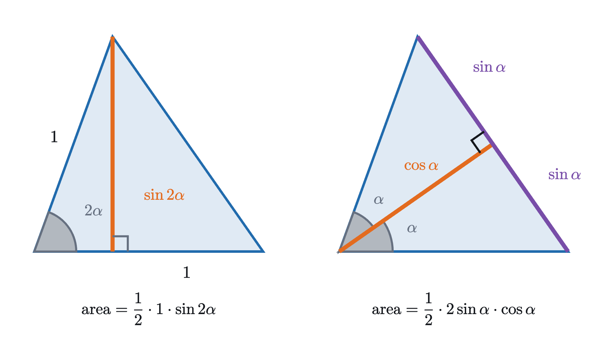
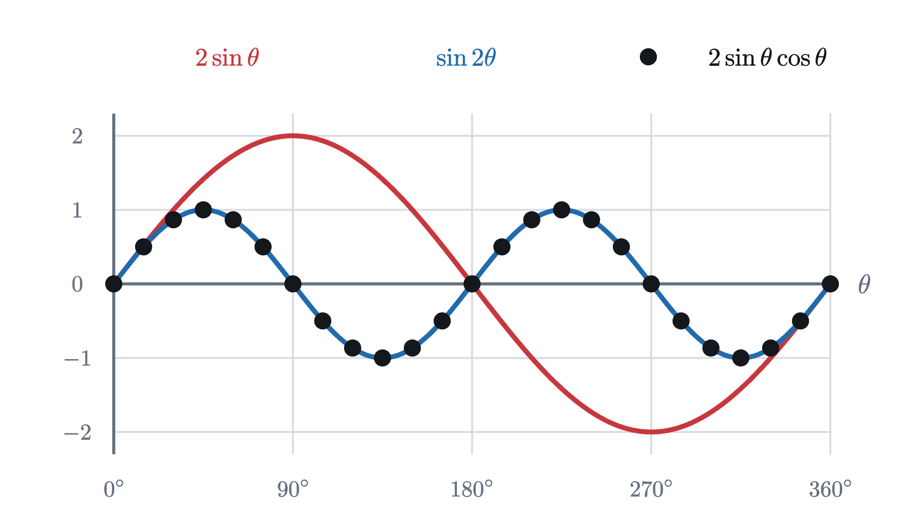

Angle addition formulas: sin(a + b) from one picture
The sine of a sum is not the sum of the sines. Two stacked right triangles show what it is, and a rotated chord proves the formulas for every angle.
AssumesThe unit circle: sine and cosine as coordinatesPythagorean identity: why sin² + cos² = 1
You know that $\sin 30° = 0.5$ and $\sin 60° \approx 0.866$. What is $\sin(30° + 60°)$? If sine treated a sum the way multiplication by a number does, the answer would be $0.5 + 0.866 = 1.366$. But $30° + 60° = 90°$, and $\sin 90° = 1$. The guess is wrong, and it could not have been right, because a sine is the height of a point on a circle of radius 1 and no such point is 1.366 above the center.
Still, the point at 90° is reached by turning 30° and then 60° more, so its position has to be determined somehow by what we know about 30° and 60°. The question of this lesson is how. Given the sines and cosines of two angles $\alpha$ and $\beta$, what are $\sin(\alpha + \beta)$ and $\cos(\alpha + \beta)$? The answer gives exact values for new angles such as 75° and 15°, it contains the double angle formulas, and it is the step on which the derivative of sine and the addition of waves both rest.
What we are allowed to use
Two facts from the unit circle lesson carry the whole argument. The first is the definition: for any angle $\theta$, turning the point $(1, 0)$ about the origin through $\theta$ brings it to the point $(\cos\theta, \sin\theta)$. The second is what this says about a right triangle. If a right triangle has hypotenuse 1 and an acute angle $\theta$, the leg next to the angle has length $\cos\theta$ and the leg across from it has length $\sin\theta$. Scale the triangle so that its hypotenuse is $c$ and both legs scale with it, to $c\cos\theta$ and $c\sin\theta$.
That second fact converts a length along a slanted line into a horizontal part and a vertical part. We will need it three times.
A first case: 30° plus 45°
Before any letters, take two angles whose sines and cosines we know exactly, 30° and 45°, and look for $\sin 75°$. By definition it is the height of the point $P$ that lies 1 unit from the origin $O$ in the direction 75°. Nothing we know speaks about 75° directly. What we do know about are right triangles with a 30° angle or a 45° angle, so the plan is to reach $P$ using only those.
Each step used the triangle fact once. From $P$ we dropped a perpendicular to the 30° ray, because that makes a right triangle $OBP$ with the 45° angle in it and hypotenuse 1: its legs are $OB = \cos 45°$ and $BP = \sin 45°$, both $\frac{\sqrt 2}{2} \approx 0.707$. That locates $P$ by going 0.707 along the slanted ray and then 0.707 at right angles to it. Height is measured vertically, so each of those two slanted segments has to be converted into its vertical part.
The segment $OB$ is the hypotenuse of triangle $OAB$, which has the 30° angle at $O$. Its vertical leg is $AB = 0.707 \times \sin 30° \approx 0.354$. The segment $BP$ is the hypotenuse of the corner triangle $BCP$. The angle of that triangle at $B$ is 30° too, for this reason: along the vertical line through $A$, $B$ and $C$, the three angles at $B$ add to 180°. One is the angle of triangle $OAB$ at $B$, which is $90° - 30° = 60°$. The next is the right angle $OBP$. That leaves $180° - 60° - 90° = 30°$. So the vertical leg is $BC = 0.707 \times \cos 30° \approx 0.612$.
The exact values are $\frac{\sqrt 2}{2} \cdot \frac{1}{2}$ and $\frac{\sqrt 2}{2} \cdot \frac{\sqrt 3}{2}$, so
which agrees with a calculator.
Pause and try
The same rectangle contains $\cos 75°$. It is the length of the top side from $D$ to $P$. Find it, using the bottom side $OA$ and the short piece $PC$ of the top side.
Show answerHide answer
The bottom side is the horizontal leg of triangle $OAB$: $OA = \frac{\sqrt 2}{2}\cos 30° \approx 0.6124$. The piece $PC$ is the horizontal leg of triangle $BCP$: $PC = \frac{\sqrt 2}{2}\sin 30° \approx 0.3536$. The top side $DC$ is as long as the bottom side, so $DP = OA - PC \approx 0.6124 - 0.3536 = 0.2588$. Exactly, $\cos 75° = \frac{\sqrt 6 - \sqrt 2}{4} \approx 0.2588$. That $DP$ is the cosine of 75° follows from triangle $ODP$, which has hypotenuse $OP = 1$ and, at $P$, the angle between $OP$ and the horizontal, which is 75°.
The same picture with letters
Nothing in that computation depended on the angles being 30° and 45°, only on their sum being less than 90°, so that the stacked triangles stay inside one quarter of the plane.
Pause and try
Redraw the rectangle with the lower angle called $\alpha$ and the upper angle called $\beta$, keeping $OP = 1$. Label $OB$, $BP$, and then all six segments on the boundary of the rectangle: $AB$, $BC$, $OA$, $PC$, $OD$ and $DP$.
Show answerHide answer
$OB = \cos\beta$ and $BP = \sin\beta$. Triangle $OAB$ has hypotenuse $\cos\beta$ and angle $\alpha$, so $OA = \cos\alpha\cos\beta$ and $AB = \sin\alpha\cos\beta$. Triangle $BCP$ has hypotenuse $\sin\beta$ and angle $\alpha$ at $B$, so $BC = \cos\alpha\sin\beta$ and $PC = \sin\alpha\sin\beta$. Triangle $ODP$ has hypotenuse 1 and angle $\alpha + \beta$ at $P$, so $OD = \sin(\alpha+\beta)$ and $DP = \cos(\alpha+\beta)$. The figure below shows all of them.

A rectangle has equal opposite sides. Reading the vertical pair gives the sine of the sum, and reading the horizontal pair gives the cosine.
The proof is the step-through figure with the two places checked where a drawing could mislead: that the corner angle at $B$ really is $\alpha$, and that the points sit on the sides of the rectangle in the order drawn.
What the picture does not cover
The picture needs both angles positive and their sum below 90°. Our opening example, 30° and 60°, already falls outside it: at a sum of exactly 90° the point $P$ lands on the corner $D$ and the triangle $ODP$ collapses. Beyond 90° the point $P$ moves to the left of $O$ and a different drawing is needed, and for angles such as 200° or $-40°$ there are no right triangles to stack at all.
Pause and try
Ignore that for a moment and put $\alpha = 30°$, $\beta = 60°$ into the sine formula. Does it give $\sin 90° = 1$? Then try $\alpha = 100°$, $\beta = 50°$ with a calculator, where the left side is $\sin 150° = 0.5$.
Show answerHide answer
For 30° and 60°: $\sin 30°\cos 60° + \cos 30°\sin 60° = \frac{1}{2}\cdot\frac{1}{2} + \frac{\sqrt 3}{2}\cdot\frac{\sqrt 3}{2} = \frac{1}{4} + \frac{3}{4} = 1$. For 100° and 50°: $\sin 100°\cos 50° \approx 0.9848 \times 0.6428 \approx 0.6330$ and $\cos 100°\sin 50° \approx -0.1736 \times 0.7660 \approx -0.1330$, which add to $0.5000$. The formula holds in both cases, and in the second one a negative cosine was needed to make it come out.

Nineteen agreeing dots are evidence, and they are not a proof. To prove the formulas for every angle we need an argument that never mentions a triangle, and the unit circle definition offers one, because it speaks about rotations and rotations do not care what size the angles are.
A proof for every angle
Write $P(\theta)$ for the point $(\cos\theta, \sin\theta)$ of the unit circle. Take any two angles $\alpha$ and $\beta$ and join $P(\alpha)$ to $P(\beta)$ by a straight segment, a chord of the circle. Now turn the whole plane about the origin through $-\beta$. Turning through $\theta$ and then through $-\beta$ is the same as turning through $\theta - \beta$, so $P(\beta)$ goes to $P(0) = (1, 0)$ and $P(\alpha)$ goes to $P(\alpha - \beta)$.
A rotation moves every point but changes no distance, so the chord has the same length before and after. Both lengths can be computed from coordinates with the distance formula, which is the Pythagorean theorem: the squared distance between $(x_1, y_1)$ and $(x_2, y_2)$ is $(x_1 - x_2)^2 + (y_1 - y_2)^2$. Setting the two computations equal gives an equation relating $\cos(\alpha - \beta)$ to the sines and cosines of $\alpha$ and $\beta$. That is the plan. Here is the full statement and the computation.
So the stacked triangles told us what the formulas are and why the mixed products appear, and the chord shows that the same formulas hold for all angles, where no triangle is available. Nothing here depends on the unit of angle either: in radians the formulas read the same, with $\frac{\pi}{2}$ in place of 90° in the proof.
Doubling an angle
Pause and try
Put $\beta = \alpha$ in the formulas for $\sin(\alpha + \beta)$ and $\cos(\alpha+\beta)$. What do they say about $\sin 2\alpha$ and $\cos 2\alpha$? Check your formula for $\sin 2\alpha$ at $\alpha = 30°$.
Show answerHide answer
$\sin 2\alpha = \sin\alpha\cos\alpha + \cos\alpha\sin\alpha = 2\sin\alpha\cos\alpha$, and $\cos 2\alpha = \cos^2\alpha - \sin^2\alpha$. At 30°: $2 \cdot \frac{1}{2} \cdot \frac{\sqrt 3}{2} = \frac{\sqrt 3}{2}$, which is $\sin 60°$.
These are the double angle formulas. For the cosine, the Pythagorean identity lets us trade $\cos^2\alpha$ for $1 - \sin^2\alpha$ or the reverse, which gives three equivalent forms:
They hold for every $\alpha$, since they are special cases of the theorem. When $0° < 2\alpha < 180°$ the sine formula can also be seen directly, as two ways of measuring one area.

On the left, the triangle stands on one of its unit sides. The far end of the other unit side is at height $\sin 2\alpha$, so the area is $\frac{1}{2}\sin 2\alpha$. On the right, the bisector of the angle $2\alpha$ cuts the triangle into two congruent right triangles, each with hypotenuse 1 and angle $\alpha$, so it meets the third side at a right angle. That side has length $2\sin\alpha$ and the bisector has length $\cos\alpha$, so the area is $\sin\alpha\cos\alpha$. It is one triangle, so $\frac{1}{2}\sin 2\alpha = \sin\alpha\cos\alpha$.

Worked examples
Looking back
The obstacle was that the point at angle $\alpha + \beta$ is described most simply in a tilted frame, as so far along the $\alpha$ direction and so far across it, while sine and cosine ask for its vertical and horizontal position. The stacked triangles resolve each tilted piece into vertical and horizontal parts, which is where the four products come from. That handled acute angles, and the proof for all angles came from giving up triangles and using the one property of a rotation that holds everywhere, that it preserves distance.
Later lessons lean on these formulas. The symmetry rule $\sin(180° - \theta) = \sin\theta$ that they contain is what produces two answers in the ambiguous case of the law of sines, and in the lesson on sine waves they explain why two waves of the same frequency add up to a single wave of that frequency.
Check yourself
Without a calculator: what is $\sin 20°\cos 40° + \cos 20°\sin 40°$?
Problems
The first three repeat the lesson’s moves, the next three combine them, and the last two extend the lesson.
Problem 1
Find $\cos 15°$ and $\sin 105°$ exactly. Explain without computing why they had to come out equal.
Show solutionHide solution
$\cos 15° = \cos(45° - 30°) = \cos 45°\cos 30° + \sin 45°\sin 30° = \frac{\sqrt 2}{2}\cdot\frac{\sqrt 3}{2} + \frac{\sqrt 2}{2}\cdot\frac{1}{2} = \frac{\sqrt 6 + \sqrt 2}{4} \approx 0.9659$. And $\sin 105° = \sin(60° + 45°) = \sin 60°\cos 45° + \cos 60°\sin 45° = \frac{\sqrt 3}{2}\cdot\frac{\sqrt 2}{2} + \frac{1}{2}\cdot\frac{\sqrt 2}{2} = \frac{\sqrt 6 + \sqrt 2}{4}$. They are equal because $\sin 105° = \sin(180° - 105°) = \sin 75°$ by the mirror symmetry of the circle in the $y$ axis, and $\sin 75° = \cos(90° - 75°) = \cos 15°$ by the complement rule. Both equal the $\sin 75°$ of the lesson.
Problem 2
An acute angle $\theta$ has $\sin\theta = \frac{3}{5}$. Find $\sin 2\theta$ and $\cos 2\theta$. In which quadrant is the point at angle $2\theta$?
Show solutionHide solution
Since $\theta$ is acute, $\cos\theta = +\sqrt{1 - \frac{9}{25}} = \frac{4}{5}$. Then $\sin 2\theta = 2\cdot\frac{3}{5}\cdot\frac{4}{5} = \frac{24}{25}$ and $\cos 2\theta = \frac{16}{25} - \frac{9}{25} = \frac{7}{25}$. Both are positive, so the point at $2\theta$ is in the first quadrant. Check: $24^2 + 7^2 = 576 + 49 = 625 = 25^2$.
Problem 3
Use the addition and subtraction formulas to recover two symmetry rules of the unit circle: $\sin(\theta + 90°) = \cos\theta$ and $\sin(180° - \theta) = \sin\theta$.
Show solutionHide solution
$\sin(\theta + 90°) = \sin\theta\cos 90° + \cos\theta\sin 90° = \sin\theta\cdot 0 + \cos\theta\cdot 1 = \cos\theta$. And $\sin(180° - \theta) = \sin 180°\cos\theta - \cos 180°\sin\theta = 0\cdot\cos\theta - (-1)\sin\theta = \sin\theta$. The general formulas contain the symmetry rules as the special cases where one angle is a multiple of 90°.
Problem 4
A student computes $\cos 75° = \cos 45°\cos 30° + \sin 45°\sin 30° \approx 0.966$. Without redoing the calculation, explain how you can tell the answer is wrong, then say what the student actually computed.
Show solutionHide solution
As the angle goes from 0° to 90° the point of the unit circle moves steadily to the left, so the cosine decreases. Since $75° > 45°$, $\cos 75°$ must be less than $\cos 45° \approx 0.707$, and $0.966$ is not. The expression with a plus sign between like products is the cosine of a difference: the student computed $\cos(45° - 30°) = \cos 15°$. The correct value is $\cos 45°\cos 30° - \sin 45°\sin 30° \approx 0.6124 - 0.3536 = 0.2588$.
Problem 5
One line through the origin has slope $\frac{1}{2}$ and another has slope $\frac{1}{3}$. Let $\alpha$ and $\beta$ be the angles they make with the positive $x$ axis, so that $\tan\alpha = \frac{1}{2}$ and $\tan\beta = \frac{1}{3}$. Show that $\alpha + \beta$ is exactly 45°.
Show solutionHide solution
By the tangent formula, $\tan(\alpha+\beta) = \dfrac{\frac{1}{2} + \frac{1}{3}}{1 - \frac{1}{2}\cdot\frac{1}{3}} = \dfrac{5/6}{5/6} = 1$. Both slopes are positive and less than 1, so $\alpha$ and $\beta$ are each between 0° and 45°, and their sum is between 0° and 90°. The only angle in that range with tangent 1 is 45°. (A calculator gives $\alpha \approx 26.565°$ and $\beta \approx 18.435°$.) The range check matters: $\tan 225° = 1$ as well, so the value of the tangent alone does not determine the angle.
Problem 6
Prove that $\sin 3\theta = 3\sin\theta - 4\sin^3\theta$ for every $\theta$, and check it at $\theta = 30°$.
Show solutionHide solution
Write $3\theta = 2\theta + \theta$. Then $\sin 3\theta = \sin 2\theta\cos\theta + \cos 2\theta\sin\theta$. Use $\sin 2\theta = 2\sin\theta\cos\theta$ and the form $\cos 2\theta = 1 - 2\sin^2\theta$, chosen because the target contains only sines:
Replace $\cos^2\theta$ by $1 - \sin^2\theta$: $\sin 3\theta = 2\sin\theta - 2\sin^3\theta + \sin\theta - 2\sin^3\theta = 3\sin\theta - 4\sin^3\theta$. At 30°: $3\cdot\frac{1}{2} - 4\cdot\frac{1}{8} = \frac{3}{2} - \frac{1}{2} = 1 = \sin 90°$.
Problem 7
The picture proof covers only $\alpha, \beta > 0°$ with $\alpha + \beta < 90°$. Here is one step of a way to extend it without the chord. Suppose both sum formulas are known to hold for a particular pair $(\alpha, \beta)$. Using only the quarter turn rules $\sin(\theta + 90°) = \cos\theta$ and $\cos(\theta + 90°) = -\sin\theta$, show that both formulas then hold for the pair $(\alpha + 90°, \beta)$.
Show solutionHide solution
Write $\alpha' = \alpha + 90°$, so $\sin\alpha' = \cos\alpha$ and $\cos\alpha' = -\sin\alpha$. For the sine: $\sin(\alpha' + \beta) = \sin\bigl((\alpha+\beta) + 90°\bigr) = \cos(\alpha+\beta)$, which by assumption is $\cos\alpha\cos\beta - \sin\alpha\sin\beta = \sin\alpha'\cos\beta + \cos\alpha'\sin\beta$. That is the sine formula for $(\alpha', \beta)$. For the cosine: $\cos(\alpha'+\beta) = \cos\bigl((\alpha+\beta) + 90°\bigr) = -\sin(\alpha+\beta) = -\sin\alpha\cos\beta - \cos\alpha\sin\beta = \cos\alpha'\cos\beta - \sin\alpha'\sin\beta$, the cosine formula for $(\alpha', \beta)$. The same works for $\beta$, and for subtracting 90°, so once the formulas are known for all $\alpha$ and $\beta$ from 0° up to 90° they spread to every pair of angles. Getting that whole square of angles from the picture still takes separate arguments for the cases $\alpha + \beta \ge 90°$ and for an angle equal to 0°, which is why the lesson used the chord.
Problem 8
(a) Show that $\sin(\alpha+\beta) + \sin(\alpha-\beta) = 2\sin\alpha\cos\beta$. (b) By choosing $\alpha$ and $\beta$ suitably, deduce that for all $x$ and $y$
(c) Check (b) with $x = 90°$ and $y = 30°$.
Show solutionHide solution
(a) Add the two formulas $\sin(\alpha+\beta) = \sin\alpha\cos\beta + \cos\alpha\sin\beta$ and $\sin(\alpha-\beta) = \sin\alpha\cos\beta - \cos\alpha\sin\beta$. The terms $\cos\alpha\sin\beta$ cancel and $2\sin\alpha\cos\beta$ remains. (b) We want $\alpha + \beta = x$ and $\alpha - \beta = y$. Adding these gives $\alpha = \frac{x+y}{2}$ and subtracting gives $\beta = \frac{x-y}{2}$. Substituting into (a) gives the stated formula. (c) The left side is $1 + \frac{1}{2} = \frac{3}{2}$. The right side is $2\sin 60°\cos 30° = 2\cdot\frac{\sqrt 3}{2}\cdot\frac{\sqrt 3}{2} = \frac{3}{2}$. This “sum to product” formula returns in the lesson on sine waves, where it explains the beating of two notes that are slightly out of tune.